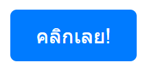

คุณได้รับมอบหมายให้สร้างปุ่ม HTML พื้นฐานและใช้ CSS เพื่อจัดรูปแบบให้ดูทันสมัยและน่าใช้งานสำหรับเว็บไซต์ คุณจะต้องปรับแต่งสี ขนาด และรูปร่างของปุ่ม
สิ่งที่โจทย์ต้องการ :
• สร้างปุ่ม HTML ที่มีข้อความ 'คลิกเลย!'
• ใช้ CSS เพื่อกำหนดสีพื้นหลังของปุ่มเป็นสีน้ำเงิน (#007bff)
• เปลี่ยนสีตัวอักษรของปุ่มเป็นสีขาว (#ffffff)
• กำหนดขนาดตัวอักษรให้ใหญ่ขึ้นเล็กน้อย (เช่น 16px หรือ 1em)
• เพิ่ม padding ภายในปุ่ม (เช่น 10px ด้านบน/ล่าง และ 20px ด้านซ้าย/ขวา)
• ทำให้ขอบของปุ่มมนเล็กน้อย (เช่น border-radius: 5px)
• ลบเส้นขอบเริ่มต้นของปุ่มออก (border: none)
• เปลี่ยน cursor ให้เป็น pointer เมื่อนำเมาส์ไปชี้
